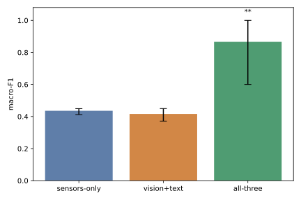

Phase 0 — Foundations done
Prereq verifier, headline-figure stub, LikeC4 sources, scope-guard hooks, initial Understand-Anything knowledge graph.
- 11 packets + 2 META PRs merged.
- ~5h wall time end-to-end.
Research portfolio · local-dev on M2 Max
llava-for-sensors is a small but production-realistic experiment in cross-modal fusion: a frozen Qwen2-VL-2B (vision + language) augmented with a trainable time-series encoder and a cross-attention fusion adapter. The thesis: combining sensors, images, and technician notes beats any single modality on bearing-fault classification.

all-three
vs vision+text. all-three beats
both vision+text AND sensors-only
by >15 pp (the load-bearing gate, passed by 45
pp). Rendered by
eval/headline_figure.py from the 5-seed × 3-condition
ablation grid; per-seed scores in
RUNNING_NOTES.md §Phase 1.
Phase 4 will route real CWRU results through the same renderer.
eval/headline.py::run_headline_from_csv: all-three macro-F1 must beat both vision+text AND sensors-only by >15 percentage points on the toy set, paired-bootstrap p < 0.05, 95% CIs of all-three vs vision+text not fully overlapping. If any of those four conditions fails, the fusion architecture is broken and Phase 1 halts.§1 — Where we are
The project follows the director / impl / codex
workflow documented in CLAUDE.md. Every change ships
through a per-packet PR with a head-pinned Codex review. The
phased plan in PLAN.md sets the build order.
Prereq verifier, headline-figure stub, LikeC4 sources, scope-guard hooks, initial Understand-Anything knowledge graph.
Smoke-tests the architecture on a synthetic 4-class dataset whose anomaly signature is designed so no single modality is sufficient. The pre-registered load-bearing gate (all-three beats vision+text by >15 pp and beats sensors-only by >15 pp on the toy set) passed at 45.1 pp with p = 0.0002 (paired bootstrap). See RUNNING_NOTES.md §Phase 1 for the full ledger.
data/synthetic.py + data/dataset.py ✓models/encoder.py + models/fusion.py ✓models/vlm.py (Qwen2-VL + LoRA) ✓train/loop.py ✓eval/ablation.py + load-bearing gate ✓ (all-three 0.867 / vision+text 0.416 / sensors-only 0.436)/understand re-run + RUNNING_NOTES rollup ✓Swap toy 1D-CNN for PatchTST (preferred) or Moment-small. Same encoder I/O contract; the smoke gate must still pass.
Real CWRU bearing data, 15-run ablation grid (3 conditions × 5 seeds), Gradio demo, mini-arXiv tech report. Optional Phase 7 flourishes: 4-bit quantization, cross-load split, C-MAPSS feasibility.
§2 — How it's built
Every choice below is justified against the realistic alternatives for a local-dev ML portfolio project. No deployment automation, no multi-environment shims — this is single-machine on purpose.
Why uv: Rust-based, ~10–100× faster than pip/poetry; one binary handles interpreter management + dependency resolution + lockfile + workspaces. Reproducibility is free (the lockfile is committed).
Vs alternatives: poetry is slower and has a heavier learning curve; pip + venv requires manual lockfile discipline; conda is overkill (no scientific binary deps that pip can't handle for this stack).
Why MPS: M2 Max has 40 GB unified memory — enough to host the full Qwen2-VL-2B fp16 (~5 GB) plus LoRA + fusion adapter optimizer state. torch.backends.mps is mature for inference; LoRA-only backward is supported.
Vs CUDA: we don't own a CUDA box. Vs MLX: Apple's MLX is faster on Apple Silicon but the PyTorch + transformers + PEFT ecosystem coverage isn't there yet for Qwen2-VL specifically. MLX is the planned Phase-7 retreat path if 4-bit quantization becomes load-bearing.
Why: transformers handles Qwen2-VL's multimodal tokenization, vision tower, RoPE, and image-token scatter mechanics. PEFT contributes LoRA, prefix tuning, IA³, and DoRA out of the box.
Vs raw PyTorch: reimplementing Qwen2-VL's vision-language token interleaving from scratch would burn a week and we'd still inherit upstream bug-fixes by upgrading the library. Vs TRL: TRL is RLHF / GRPO-focused; we don't need RL for supervised fine-tuning.
Why: diagrams live next to the source they describe, are version-controlled, and re-export deterministically to Mermaid. The component view embedded below is generated from architecture/component.c4.
Vs Mermaid alone: LikeC4 has typed elements (container, component, system), explicit relations, view definitions, and validation. Pure Mermaid is fine for one diagram, brittle for a layered architecture. Vs draw.io / Excalidraw: binary files don't diff well in PRs.
Why: regenerable, browsable knowledge graph of the codebase committed at every phase boundary. Reviewer entry point — they can walk the graph instead of reading every file.
Vs Doxygen / Sphinx: those generate reference docs; this surfaces architectural relationships and explains why. Vs LLM-generated CODE_MAP.md: the graph is queryable + versioned, not a flat dump.
Why: Claude is the director (specs, scope gates, merges); impl subagents are per-packet workers in isolated git worktrees; Codex is the only writer of production code. The pattern is enforced by hooks/write-scope-guard.mjs — Claude literally cannot edit production code.
Vs single-agent: domain correctness + taste stay with the director; transcription stays with the writer; review is cross-family adversarial (Codex worker + Codex reviewer, then GitHub Codex bot on PRs). Each role has its own context window, so the system can build features bigger than any one agent can hold.
§3 — System design
The model's body is a frozen Qwen2-VL-2B. We bolt on three small trainable pieces: a time-series encoder, a cross-attention fusion adapter that projects sensor embeddings into the VLM's token space, and LoRA adapters on the LLM's attention projections. A 4-class classification head reads the pooled multimodal hidden state.
%%{init: {"theme": "base"} }%%
graph TB
subgraph TS["Time-Series Encoder · trainable"]
Conv["Conv Stack
3× Conv1d + GELU"] --> Proj["Patch Linear
(256 → 512)"]
end
subgraph FUSE["Fusion Adapter · trainable"]
KV["KV Projection
(512 → 1536)"]
Q["16 Learned Queries
(1536-d)"]
Attn["Cross-Attention
(8 heads, d=1536)"]
MLP["MLP + LayerNorm"]
KV --> Attn
Q --> Attn
Attn --> MLP
end
subgraph VLM["Qwen2-VL-2B · frozen body"]
Vis["Vision Tower
(frozen)"]
LLM["LLM Backbone
(frozen)"]
LoRA["LoRA Adapters
(q_proj, v_proj, r=8)
trainable"]
Vis --> LLM
LLM <--> LoRA
end
Head["4-Class Head
(1536 → 4)
trainable"]
Sensor["sensor window
(B, 2048)"] --> Conv
Proj --> KV
MLP --> LLM
Image["image
(B, 3, H, W)"] --> Vis
Text["text tokens"] --> LLM
LLM --> Head
| Stage | Shape | Source of truth |
|---|---|---|
| Sensor window in | (B, 2048) float32 | data/synthetic.py |
| Encoder output (patches) | (B, 32, 512) | models/encoder.py |
| Fusion adapter output | (B, 16, 1536) | models/fusion.py |
| VLM hidden state | (B, S, 1536) | Qwen2-VL-2B config |
| Classification logits | (B, 4) | eval/models.py |
§4 — The ML / AI substrate
Each algorithm below has a three-depth explanation — high (intuition), medium (mechanics), low (math & code) — plus the alternatives we considered and why we ruled them out.
Train ~1.4M LoRA parameters; freeze ~2.2B; pretend you fine-tuned the whole thing.
Fine-tuning a 2-billion-parameter model the traditional way means updating every weight in the model. That's expensive (you need optimizer state for every parameter — Adam holds two extra floats per weight, so ~3× the model size in RAM) and risky (the model can forget what it already knew). LoRA's trick: freeze the original weights, and learn a small "side-channel" matrix that gets added on top. The side-channel is forced to be low-rank — a tall-then-wide decomposition — so it has only a few million parameters total even when targeting a model with billions.
For us, this means the Qwen2-VL-2B vision-language model stays exactly as the Qwen team trained it; we just nudge its attention layers slightly toward bearing-fault classification.
For every weight matrix W ∈ ℝd×k we want
to adapt (in our case, the q_proj and
v_proj in every LLM attention block), LoRA inserts
two trainable matrices A ∈ ℝr×k and
B ∈ ℝd×r with rank
r ≪ min(d, k). At inference the effective weight is
W + (α/r) · B·A; at training only A and B receive
gradients.
r = 8: small enough that q_proj+v_proj across all 28 Qwen2-VL LM layers add only ~1.4M trainable params, large enough to capture task signal. (LoRA's r=8 per-linear cost is 2·r·d = 2·8·1536 = 24,576; two modules per layer × 28 layers = 1,376,256.)α = 16: per the original paper, "tuning α is roughly equivalent to tuning the learning rate," so the practical default of α = 2r works.q_proj + v_proj: empirically the highest-signal targets for transformer adaptation; k_proj/o_proj/MLP gain marginal F1 at significant parameter cost.A ~ N(0, σ²), B = 0, so the adapter starts as a no-op and the original model output is unchanged at step 0.
Let x ∈ ℝk be an attention input.
Standard projection: h = W x. LoRA's modified
projection:
\[ h \;=\; W x \;+\; \tfrac{\alpha}{r}\, B (A x). \]
During training, W has requires_grad =
False. Backprop flows only into A and
B. Memory cost: instead of one d × k
optimizer-state block (Adam ⇒ 2 d k floats), we
pay 2 r (d + k) floats. For Qwen2-VL's
1536-dimensional attention with r = 8, that's a
~97× reduction per adapted matrix.
The forward pass adds two GEMMs but each is small
(r·k and d·r FLOPs vs d·k
for the base projection), so wall time is dominated by the
frozen forward.
In models/vlm.py:
LoraConfig(r=8, lora_alpha=16, target_modules=["q_proj","v_proj"], task_type=CAUSAL_LM);
model = get_peft_model(model, lora_config).
Further reading: LoRA paper (Hu et al. 2021) · PEFT conceptual guide · Sebastian Raschka — practical LoRA tips
Compress 32 sensor patches into 16 tokens in the VLM's language.
The VLM speaks "tokens" — discrete things that the language model attends over. The time-series encoder produces "patches" — numerical vectors with no native meaning to the LLM. The fusion adapter is a tiny translator: given a variable-length sequence of sensor patches, it produces a fixed number of tokens (we picked 16) at exactly the LLM's hidden dimension (1536), which we can splice into the LLM's input stream alongside image and text tokens.
The "translation" trick is cross-attention with learned queries: the adapter holds 16 query vectors as parameters, attends over the encoder patches to fill them with relevant content, and outputs the 16 enriched vectors. It's the same pattern used by Flamingo's Perceiver Resampler and BLIP-2's Q-Former.
The adapter is a single-block cross-attention + residual MLP:
KV = Linear(denc=512 → dvlm=1536)(patches)
→ shape (B, 32, 1536).Q ∈ ℝ16×1536, initialized
𝒩(0, 0.02²), broadcast to batch
(B, 16, 1536).attn = MultiheadAttention(Q, KV, KV)
→ (B, 16, 1536).out = LayerNorm(attn + MLP(attn)).
The output (B, 16, 1536) is prepended to the LLM's
embedded input. The frozen LLM attends over (sensor || image ||
text) tokens jointly; LoRA adapts the LLM's attention to use
the new sensor channel.
Cross-attention is just the attention operator with queries coming from one stream and keys+values from another:
\[ \mathrm{Attn}(Q, K, V) \;=\; \mathrm{softmax}\!\left( \frac{Q K^{\top}}{\sqrt{d_k}} \right) V \]
In our setup, Q ∈ ℝ16×1536 are
learned parameters; K, V ∈ ℝ32×1536
are projected encoder patches. The query length (16) is fixed
and decoupled from the encoder's output length (32), which is
the whole point: downstream tokens consumed by the LLM are
budgeted independently of upstream sensor resolution.
Total trainable params for the adapter:
(512+1) · 1536 (KV proj) +
16 · 1536 (queries) +
4 · 1536² (attention QKV + output projections) +
2 · 1536² (MLP) + LayerNorm —
roughly 14M params, the largest trainable
block in the whole stack. (LoRA + classification head sit
below 1M each.)
Further reading: Flamingo (Perceiver Resampler) · BLIP-2 (Q-Former) · Jay Alammar — Illustrated Transformer (for the attention background)
A 2.2B-param multimodal model that already speaks image + text fluently.
Qwen2-VL (Alibaba's open-weight family) reads images and text jointly. The 2B-parameter variant is small enough to fit in M2 Max memory at half precision and powerful enough to be a useful general-purpose vision-language backbone. We use the Instruct variant — already aligned to follow image + text prompts — and freeze every weight.
Why Qwen2-VL and not another VLM? See the alternatives below. Short answer: it's the best open trade-off between size, capability, and clean transformers-library integration as of late 2024.
Architectural moving parts:
<|image_pad|> placeholder tokens;
during forward, the vision-encoder embeddings are scattered
into those positions inside the LLM's input embedding
tensor.
We freeze the entire body
(param.requires_grad_(False)) and only train LoRA
on q_proj + v_proj, plus the
classification head and the fusion adapter on top.
We don't reimplement Qwen2-VL — we load it via:
from transformers import Qwen2VLForConditionalGeneration
model = Qwen2VLForConditionalGeneration.from_pretrained(
"Qwen/Qwen2-VL-2B-Instruct",
torch_dtype=torch.float16, # fp32 on CPU fallback
)
for p in model.parameters():
p.requires_grad_(False)Memory: ~5.2 GB on disk, ~5 GB in MPS unified memory at fp16, plus ~5 GB activations during forward at batch=1 with a 224×224 image. Our P1.3 OOM smoke test pins the budget at <10 GB total.
The forward path our model uses, schematically:
# inside eval/models.py AllThreeModel.forward
sensor_tokens = self.fusion(self.encoder(sensor)) # (B, 16, 1536)
proc_inputs = self.processor(images=image, text=...) # input_ids, pixel_values, image_grid_thw
text_image_emb = self.vlm.get_input_embeddings()(proc_inputs["input_ids"])
combined_emb = torch.cat([sensor_tokens, text_image_emb], dim=1)
# input_ids extended with PAD ids for sensor positions so length matches
out = self.vlm(
inputs_embeds=combined_emb,
input_ids=extended_input_ids,
attention_mask=extended_mask,
pixel_values=proc_inputs["pixel_values"],
image_grid_thw=proc_inputs["image_grid_thw"],
output_hidden_states=True,
)
logits = self.head(out.hidden_states[-1].mean(dim=1)) # (B, 4)Further reading: Qwen2-VL paper (Wang et al. 2024) · Model card · Original LLaVA (Liu et al. 2023)
Turn a raw 2048-sample vibration window into 32 patches the fusion adapter can consume.
Industrial vibration sensors produce dense numerical sequences — for CWRU bearings, 12 kHz mono accelerometer readings. We chop them into 2048-sample windows (~170 ms each) and need to represent each window as a sequence of vectors that the rest of the network can work with. Phase 1 uses a stack of 1D convolutions for speed; Phase 2 swaps in PatchTST, a transformer-style time-series encoder, once the pipeline is proven.
Toy encoder (Phase 1): three 1D-Conv + GELU layers progressively downsample 2048 samples → 32 patches with 256-d features, followed by a linear projection to 512-d. Small (< 1M params), fast on MPS, easy to debug.
PatchTST (Phase 2): divides the time series into non-overlapping patches (analogous to ViT patches), embeds each patch, and processes them with a transformer encoder. Critically, it uses channel independence — multivariate series are handled by treating each channel as a separate sequence — which simplifies our single-channel CWRU setting.
Phase 1 encoder (verbatim from models/encoder.py):
self.convs = nn.Sequential(
nn.Conv1d(1, 64, kernel_size=8, stride=8), nn.GELU(),
nn.Conv1d(64, 128, kernel_size=4, stride=4), nn.GELU(),
nn.Conv1d(128, 256, kernel_size=2, stride=2), nn.GELU(),
)
self.proj = nn.Linear(256, 512)
def forward(self, x): # x: (B, 2048)
x = x.unsqueeze(1) # (B, 1, 2048)
x = self.convs(x) # (B, 256, 32)
x = x.transpose(1, 2) # (B, 32, 256)
return self.proj(x) # (B, 32, 512)
The (8, 4, 2) stride product is exactly 64, so
2048 / 64 = 32 patches drop out cleanly. The fusion adapter is
the only consumer of this output and is unaware of which
encoder produced it — Phase 2's PatchTST swap is bounded to
models/encoder.py alone.
Further reading: PatchTST (Nie et al. ICLR 2023) · PatchTST reference repo
The honest way to report N=5 ablation results.
We train each ablation condition with 5 random seeds. To claim "fusion wins," it's not enough that the mean is higher — the gap has to be statistically meaningful given the seed-to-seed noise. With only 5 samples per condition, the textbook t-test CI is misleading (assumes normality). The bootstrap resamples our 5 numbers many times to estimate the distribution of the mean directly.
For each condition we report:
all-three against
vision+text: same 5 seeds, same data split.
Compute the per-seed differences, then for
b = 1, …, 10,000 resample those 5 differences
with replacement and take their mean. Center the
resampled means at zero (subtract their grand mean), and
report the fraction of resamples where
|centered resample| ≥ |observed mean diff|.
That gives a two-sided tail probability that
matches what eval/headline_figure.py
computes verbatim.
The pre-registered acceptance — enforced verbatim
by eval/headline.py::run_headline_from_csv — is
four conjuncts:
mean(all-three) − mean(vision+text) > 0.15 AND
mean(all-three) − mean(sensors-only) > 0.15 AND
paired-bootstrap p < 0.05 AND the 95% CIs of
all-three vs vision+text don't
fully overlap. The two >15 pp gaps are the load-bearing
gate; p and the CI overlap are the statistical
guardrails. Anything else ships as an honest negative result.
Given seed-level F1s x = (x₁, …, x₅) for one
condition, the percentile-bootstrap CI is:
b = 1, …, B = 10000: draw
x* ∼ \mathrm{Multinomial}(5,\, \text{uniform})
with replacement from x; let
μ̂*b = mean(x*).{μ̂*b}; report
[μ̂*(0.025·B), μ̂*(0.975·B)].
Paired test for all-three vs
vision+text over the same seeds: compute
per-seed differences
dᵢ = f1all-three,i − f1vision+text,i;
let D̄ = mean({dᵢ}) be the observed mean
difference. For b = 1, …, B = 10000: draw
d*b with replacement from
{dᵢ} and let
m*b = mean(d*b). Center
the resamples at zero by subtracting their grand mean
m̄* = mean({m*b}), then report the
two-sided tail probability
p = (1/B) · #{b : |m*b − m̄*| ≥ |D̄|}.
Floored at 1/B to avoid reporting
p=0.
Implementation: eval/headline_figure.py's
compute_headline() (the formula above is the
verbatim transcription of
_paired_bootstrap_p(), lines 56–72).
Deterministic via a fixed rng_seed passed
into NumPy's Generator.
Further reading: Bootstrapping (Wikipedia) · Mooney & Duval (1993) intro
Penalize the model for ignoring rare classes.
Macro-F1 averages the F1 score across classes equally, regardless of how many samples each class has. This catches a common failure mode where a classifier looks great on accuracy (because it nails the dominant class) while completely missing rare faults — which, in a bearing-fault setting, is exactly the opposite of what we want.
F1 per class is the harmonic mean of precision and recall; macro-F1 averages those per-class F1s with equal weight. For our 4-class CWRU problem (Normal / Inner-Race Fault / Outer-Race Fault / Ball Fault), all classes matter equally from a safety standpoint, so equal weighting is the principled choice.
For class c with true positives
TPc, false positives
FPc, false negatives
FNc:
\[ \mathrm{Precision}_c = \tfrac{TP_c}{TP_c + FP_c}, \quad \mathrm{Recall}_c = \tfrac{TP_c}{TP_c + FN_c}, \] \[ F1_c \;=\; \tfrac{2 \cdot \mathrm{Precision}_c \cdot \mathrm{Recall}_c}{\mathrm{Precision}_c + \mathrm{Recall}_c}, \] \[ \mathrm{macro\text{-}F1} \;=\; \frac{1}{C}\sum_{c=1}^{C} F1_c. \]
Further reading: scikit-learn F1 docs
§5 — How the build runs
The project is built by a multi-agent system documented in
CLAUDE.md. The contract is enforced by file-system
scope guards, not by trust.
PLAN.md).Edit / Write / MultiEdit by hooks/write-scope-guard.mjs./codex:review) until clean.@codex review eye-emoji loop.Edit / Write / MultiEdit tools — defense in depth.scripts/codex-run.sh worker./codex:review runs adversarially against its own output; GitHub @codex review is the merge-blocking head-pinned reviewer..codex/schemas/codex-result.schema.json so every run leaves an auditable diff patch..codex-runs/<id>/scope.txt).git_diff.patch; no Bash bypass./codex:review until VERDICT: correct.@codex review — bare standalone comment, head-pinned verdict, zero unresolved threads.
The full doctrine is in CLAUDE.md.
§6 — Further reading
Every URL below has been fetched and confirmed at site-build time. If you find one rotted, please open an issue.